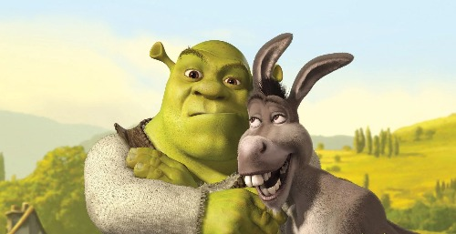

About Shrek
Shrek is cool. He likes donkeys. Hates small people!
Shrek loves donkey.
- He's got big hands
- He's got a big heart
- Lives in a swamp
Shrek's Friends
He has many friends, of different species and kinds! Donkeys, cats, puppets, biscuits, to name a few! Click on the links below to find out more about them!